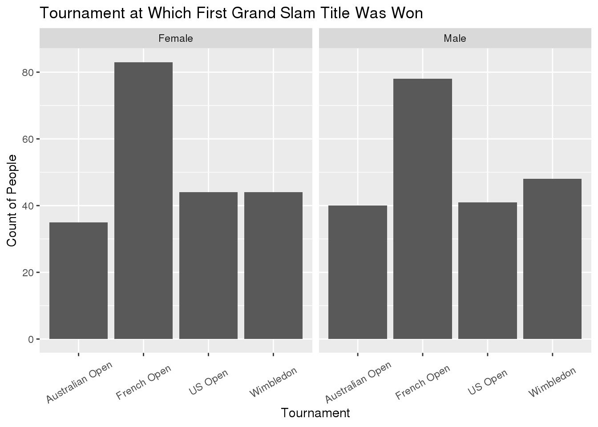

Men’s and Women’s Tennis Grand Slam Championships
library(here)
library(tidyverse)
library(ggplot2)
dat1 <- read_csv(here::here("data", "grand_slam_timeline.csv"))
dat2 <- read_csv(here::here("data", "grand_slams.csv"))
dat3 <- read_csv(here::here("data", "player_dob.csv"))The first data set comes from the grand_slam_timeline.csv file on the Tidy Tuesday website. The data set has 12,605 observations of 5 variables. The variables are fairly self-explanatory, player is the name of the player, year is the year of the tournament, tournament gives the name of the tournament, outcome gives what position in the tournament the player finished, and gender gives the gender of the player.
The second data set comes from the grand_slams.csv file on the Tidy Tuesday website. This data set has only 416 observations on 6 variables. This data set provides the same variables year and gender as the previous data set. Similarly, grand_slam provides the same information as tournament in the previous data set, and name provides the same information as player. This data set additionally provides the rolling_win_count which gives the total number of wins for the player at the time of that tournament, and tournament_date which gives the approximate date that the tournament took place.
The third data set comes from the player_dob.csv file on the Tidy Tuesday website. This data set has 105 observations of 5 variables. The name variable is the same as in the previous data set. For this data set, grand_slam indicates what tournament the player was playing at when they won their first grand slam. date_of_first_title gives the date at which this occurs. date_of_birth gives the date of birth of the player, allowing age to be calculated by finding the difference in number of days between the date_of_first_title and date_of_birth to give the age at the time of first grand slam championship.
Question 1
What grand slam is most common to win a first title at?
dat3 %>%
left_join(dat2, c("name" = "name")) %>%
filter(!is.na(grand_slam.x)) %>%
ggplot(., aes(x = grand_slam.x)) +
geom_bar() +
facet_wrap("gender") +
ggtitle("Tournament at Which First Grand Slam Title Was Won") +
ylab("Count of People") +
xlab("Tournament") +
theme(axis.text.x = element_text(angle = 30, vjust = 0.5)) The above graph shows that for both women and men, the majority of players win their first grand slam title at the French Open. Additionally the Australian Open has the least number of first time wins for both. It makes sense that the Australian Open has the least amount of first time wins since it is the first tournament of the calendar year. With the French Open being the second tournament of the year, and taking place several months after the Australian Open, it appears that the players come more prepared to their second tournament of the year to win a title for the first time.
Question 2
Do players that are younger at the time of first grand slam win more tournaments overall?
dat2 %>%
group_by(name) %>%
filter(rolling_win_count == max(rolling_win_count)) %>%
left_join(dat3, c("name" = "name")) %>%
filter(!is.na(age)) %>%
mutate(age_years = (age/365.25)) %>%
ggplot(., aes(x = age_years, y = rolling_win_count)) +
geom_point() +
geom_smooth() +
ylim(0, 25) +
ggtitle("Total Number of Grand Slams Won vs. Age at First Win") +
xlab("Age (in years)") +
ylab("Total number of wins")
dat2 %>%
group_by(name) %>%
filter(rolling_win_count == max(rolling_win_count)) %>%
left_join(dat3, c("name" = "name")) %>%
filter(!is.na(age)) %>%
mutate(age_years = (age/365.25)) %>%
ggplot(., aes(x = age_years, y = rolling_win_count, color = gender)) +
geom_point() +
geom_smooth() +
ylim(0, 25) +
ggtitle("Total Number of Grand Slams Won vs. Age at First Win by Gender") +
xlab("Age (in years)") +
ylab("Total number of wins") The graphs above show the total number of wins plotted against the age in years of a player when they won their first Grand Slam tournament. The first graph shows overall for both men and women, and the second graph breaks it down between men and women. In both graphs you can see that for the players that win their first tournament close to age 20, there is a significant difference in the number of grand slams that they will go on to win as opposed to those who win their first tournament in later years. This trend seems to be more predominant for women players. Although the total number of grand slams won appears to be close to the same for men and women, the drop off occurs at a later age for men, and occurs less drastically than with the change in number of wins for women. This supports the claim that if a player wins their first Grand Slam tournament at a young age they will go on to win more tournaments in their career, on average.
The graphs above show the total number of wins plotted against the age in years of a player when they won their first Grand Slam tournament. The first graph shows overall for both men and women, and the second graph breaks it down between men and women. In both graphs you can see that for the players that win their first tournament close to age 20, there is a significant difference in the number of grand slams that they will go on to win as opposed to those who win their first tournament in later years. This trend seems to be more predominant for women players. Although the total number of grand slams won appears to be close to the same for men and women, the drop off occurs at a later age for men, and occurs less drastically than with the change in number of wins for women. This supports the claim that if a player wins their first Grand Slam tournament at a young age they will go on to win more tournaments in their career, on average.
Question 3
How does the age of first title won differ between males and females?
dat2 %>%
group_by(name) %>%
filter(rolling_win_count == max(rolling_win_count)) %>%
left_join(dat3, c("name" = "name")) %>%
filter(!is.na(age)) %>%
mutate(age_years = (age/365.25)) %>%
ggplot(., aes(x = age_years)) +
geom_histogram() +
facet_wrap("gender") +
ggtitle("Distribution of Age at Which First Grand Slam was Won by Gender") +
xlab("Age (in years)") +
ylab("Number of people")The histograms above show the distribution of the age of the players when they won their first grand slam divided into males and females. The distribution of the ages of females appears to be more skewed right while the distribution of the males appears to be much more normally distributed. This indicates that on average, females tend to be younger when winning their first grand slam tournament. This lines up with the graph show above in the previous question that women need to win a grand slam tournament at a younger age in order to have more career wins.
Question 4
What tournament was most frequently missed?
dat1 %>%
filter(outcome == "Absent") %>%
ggplot(., aes(x = tournament)) +
geom_bar() +
ggtitle("Count of the Number of People That Missed Each Grand Slam") +
xlab("Tournament") +
ylab("Count of players")
dat1 %>%
filter(outcome == "Absent") %>%
ggplot(., aes(x = tournament)) +
geom_bar() +
facet_wrap("gender") +
ggtitle("Count of the Number of People That Missed Each Grand Slam by Gender") +
xlab("Tournament") +
ylab("Count of players") +
theme(axis.text.x = element_text(angle = 30, vjust = 0.5)) The two charts above show the total number of players that did not attend a certain tournament, and the second chart breaks it down into women and men. In all three graphics, the Australian Open is the most missed tournament. This is also interesting to look at because going back to the first question, the Australian Open was the tournament that the least number of people won their first grand slam title at. This makes sense if a large number of people are choosing to not play in the tournament. It is also interesting to note that the total number of absent players for the women is higher than for the men.
The two charts above show the total number of players that did not attend a certain tournament, and the second chart breaks it down into women and men. In all three graphics, the Australian Open is the most missed tournament. This is also interesting to look at because going back to the first question, the Australian Open was the tournament that the least number of people won their first grand slam title at. This makes sense if a large number of people are choosing to not play in the tournament. It is also interesting to note that the total number of absent players for the women is higher than for the men.
Question 5
Of the players with greater than 4 overall wins, which player wins the most for each tournament?
dat1 %>%
filter(outcome == "Won") %>%
group_by(tournament, player, gender) %>%
mutate(total_wins = n()) %>%
summarize(max_wins = max(total_wins)) %>%
filter(max_wins > 4) %>%
arrange(desc(max_wins))## # A tibble: 20 x 4
## # Groups: tournament, player [20]
## tournament player gender max_wins
## <chr> <chr> <chr> <int>
## 1 French Open Rafael Nadal Male 11
## 2 Wimbledon Martina Navratilova Female 9
## 3 Wimbledon Roger Federer Male 8
## 4 Australian Open Novak Djokovic Male 7
## 5 Australian Open Serena Williams Female 7
## 6 French Open Chris Evert Female 7
## 7 Wimbledon Pete Sampras Male 7
## 8 Wimbledon Serena Williams Female 7
## 9 Wimbledon Steffi Graf Female 7
## 10 Australian Open Roger Federer Male 6
## 11 French Open Björn Borg Male 6
## 12 French Open Steffi Graf Female 6
## 13 US Open Chris Evert Female 6
## 14 US Open Serena Williams Female 6
## 15 US Open Jimmy Connors Male 5
## 16 US Open Pete Sampras Male 5
## 17 US Open Roger Federer Male 5
## 18 US Open Steffi Graf Female 5
## 19 Wimbledon Björn Borg Male 5
## 20 Wimbledon Venus Williams Female 5The table above gives the results of the players that have won the most titles at each grand slam, and how many times they won that grand slam.
Male player with the greatest wins for each tournament: Australian Open: Novak Djokovic (7) French Open: Rafael Nadal (11) Wimbledon: Roger Federer (8) US Open: Jimmy Connors/Pete Sampras/Roger Federer (5)
Female player with the greatest wins for each tournament: Australian Open: Serena Williams (7) French Open: Chris Evert (7) Wimbledon: Martina Navratilova (9) US Open: Chris Evert/Serena Williams (6)